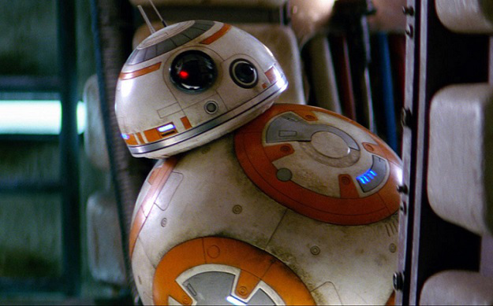
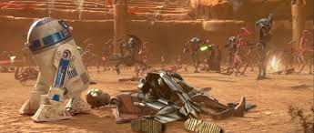
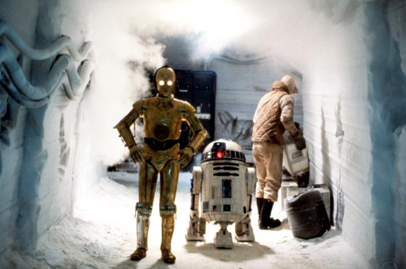
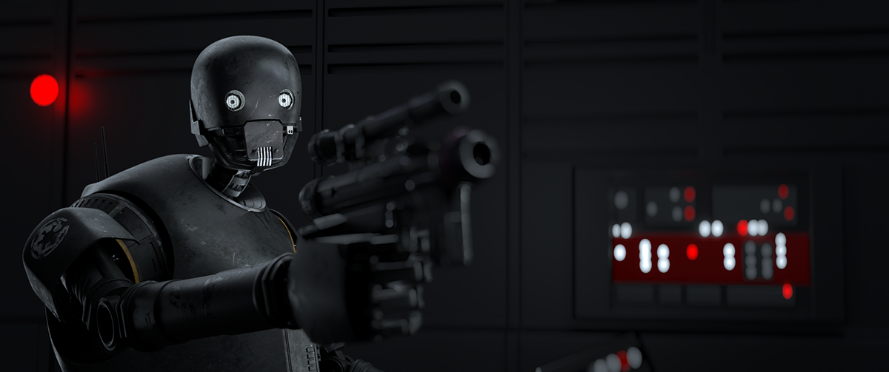
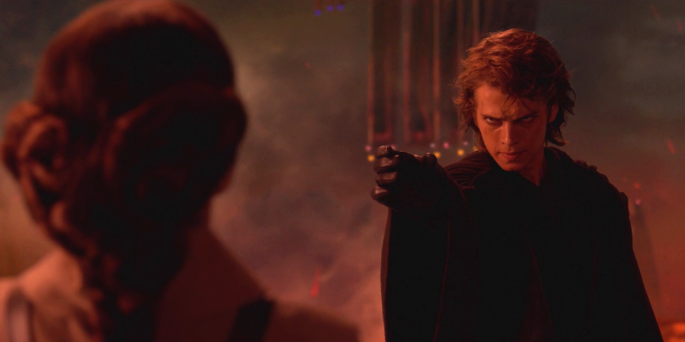
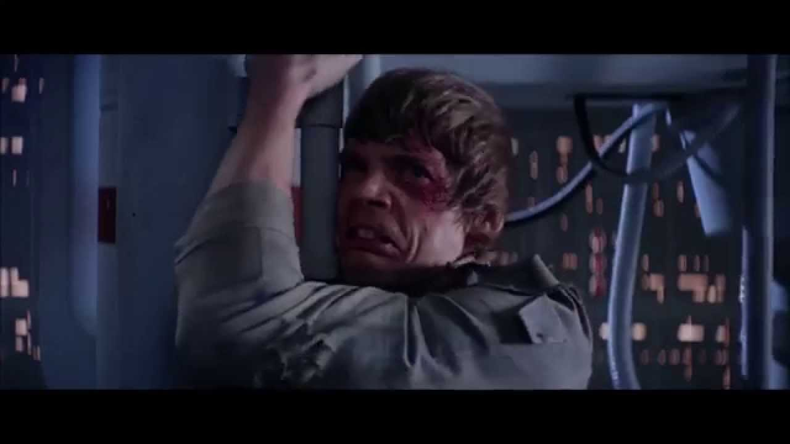
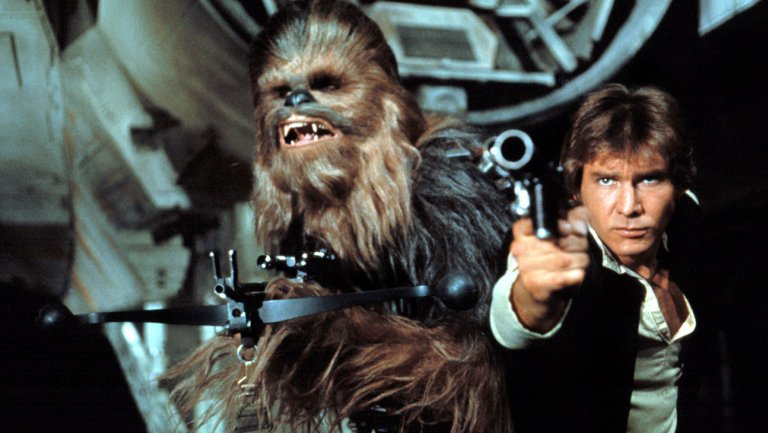
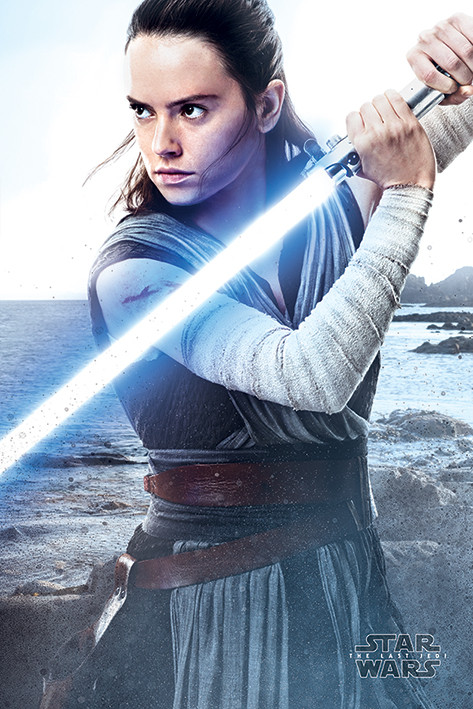

STAR WARS
Droids
BB8
BB8 is a droid from episod 7 The force awakens. He is a BB unit he is a veary funny droid. BB8 is with the resistance he has tree friend Poe, Rey, and Finn. B B-8 was first seen in the 88-second The Force Awakens teaser trailer released by Lucasfilm on November 28, 2014. Its name was revealed by Entertainment Weekly in a Lucasfilm-designed Topps-style trading card mockup in December 2014.
R2-D2
R2-D2 has a droid friend named C3-po. R2 became Anikans capanoin. in A New Hope R2 meets Luke Sywaker on Tatoine. They travle to the death star to save the princess. In the clone wars R2 drags 's head across the battle feild to his body. In In the Phantom menace he meets C3po. in the force awakens and last jedi R2 hides. R2 is a small astromech droid. R2-D2 is a major character and appears in only nine out of the ten Star Wars films to date. Throughout the course of the films, R2 is a friend to Padmé Amidala, Anakin Skywalker, Leia Organa, Luke Skywalker, and Obi-Wan Kenobi in various points in the saga.
C3-PO
C3-PO appears in the original trilogy, the prequel trilogy and the sequel trilogy. Built by Anakin Skywalker, C-3PO was designed as a protocol droid intended to assist in etiquette, customs, and translation, boasting that he is "fluent in over six million forms of communication". Along with his astromech droid counterpart and friend R2-D2, C-3PO provides comic relief within the narrative structure of the films, and serves as a foil. Anthony Daniels has portrayed the character in ten of eleven Star Wars cinematic films released to date, including Rogue One and the animated The Clone Wars. C-3PO and R2-D2 are the only characters to appear in all of the films except Solo: A Star Wars Story.
K2SO
K-2SO was part of the initial line-up of spies in John Knoll's pitch for Rogue One, as an Imperial protocol droid. Designs for the character's look focused on giving him both a unique silhouette as well as keeping him in tune with the Imperial aesthetic from A New Hope. References of Imperial designs were used, and the character's chest plate draws on the armor of an AT-AT commander in The Empire Strikes Back. Unused designs by Ralph McQuarrie for droids and stormtrooper helmets would influence his eventual headshape. Originally designed as a "black protocol droid". further story development and drafts that "accentuated" his ties to the Empire turned K-2SO into an Imperial security droid. His laid back personality became a "visual amusing" contrast to his "towering, monolothic form". Director Gareth Edwards wanted K-2SO to be "appealing" despite his figure, and designs continued to reflect elements of his personality with his form; his stoop is one example, showing his "casual kind of personality".
Charters
Padm`e Amidala
appearing in the prequel trilogy portrayed by actress Natalie Portman. She served as the Princess of Theed and later Queen of Naboo. After her reign, she became a senator in the Galactic Senate, an anti-war movement spokesperson, and co-founder of the opposition-faction that later emerged as the Rebel Alliance. She was secretly married to the Jedi Anakin Skywalker, and was the mother of Luke Skywalker and Leia Organa, which makes her the mother-in-law of Han Solo, and the grandmother of Kylo Ren
.jpg)
Anikan Skywaker
Anakin first appears in the prequel trilogy in Star Wars: Episode I – The Phantom Menace, which takes place 32 years before the original Star Wars, as a young slave living on the planet Tatooine with his mother Shmi. Anakin was conceived without a father and he can foresee the future. Also a gifted pilot and mechanic, Anakin has built his own protocol droid, C-3PO. Jedi Master Qui-Gon Jinn meets Anakin after making an emergency landing on Tatooine. Qui-Gon senses Anakin's strong connection to the Force and becomes convinced that the boy is the "Chosen One" of Jedi prophecy who will bring balance to the Force. After winning his freedom in a podrace, Anakin leaves for Coruscant to be trained as a Jedi, but is forced to leave Shmi behind. During the journey, Anakin forms a bond with Padmé Amidala, the young queen of Naboo. Qui-Gon asks the Jedi Council for permission to train Anakin, but they sense fear in the boy and refuse. Eventually, Anakin helps thwart the Trade Federation's invasion of Naboo by destroying their command ship. After Qui-Gon is killed in a lightsaber duel with Sith Lord Darth Maul, Obi-Wan promises to train Anakin, with the Council's reluctant approval. Palpatine later befriends Anakin and tells him that he will watch the boy's career "with great interest".
Luke Skywalker
Mark Hamill played Luke Skywalker. Luke is an important figure in the Rebel Alliance's struggle against the Galactic Empire. He is the twin brother of Rebellion leader Princess Leia Organa of Alderaan, a friend and brother-in-law of smuggler Han Solo, an apprentice to Jedi Masters Obi-Wan "Ben" Kenobi and Yoda, the son of fallen Jedi Anakin Skywalker (Darth Vader) and Queen of Naboo/Republic Senator Padmé Amidala and maternal uncle of Kylo Ren/Ben Solo. The now non-canon Star Wars expanded universe depicts him as a powerful Jedi Master, husband of Mara Jade, the father of Ben Skywalker and maternal uncle of Jaina, Jacen and Anakin
Leia Organa
Leia is played by Carrie Fisher.Leia is introduced in the original Star Wars film in 1977, Leia is princess of the planet Alderaan, a member of the Imperial Senate and an agent of the Rebel Alliance. She thwarts the sinister Sith Lord Darth Vader and helps bring about the destruction of the Empire's cataclysmic superweapon, the Death Star. In The Empire Strikes Back (1980), Leia commands a Rebel base and evades Vader as she falls in love with the smuggler, Han Solo. In Return of the Jedi (1983), Leia leads the operation to rescue Han from the crime lord Jabba the Hutt, and is revealed to be Vader's daughter and the twin sister of Luke Skywalker. The prequel film Revenge of the Sith (2005) establishes that the twins' mother is Senator (and former queen) Padmé Amidala of Naboo, who dies after childbirth. Leia is adopted by Senator Bail and Queen Breha Organa of Alderaan. In The Force Awakens (2015) and The Last Jedi (2017), Leia is the founder and General of the Resistance against the First Order. She and Han have a son named Ben, who adopted the name Kylo Ren after turning to the dark side of the Force.

Jyn Erso
Felicity Jones plays Jyn Erso in the 2016 film Rogue One. Jyn is a former criminal who aids the Rebel Alliance in a desperate attempt to steal the plans to the Death Star, a powerful weapon possessed by the Empire. The character was introduced as a child in the 2016 prequel novel Catalyst by James Luceno. Critics have compared Jyn to the characterization of Han Solo (Harrison Ford) in the Star Wars original trilogy and Rey (Daisy Ridley) in the Star Wars sequel trilogy.

Han Solo
Han is a pilot from the planet Corellia, and the captain of the Millennium Falcon. In the original film trilogy, Han pilots the Falcon, along with his Wookiee co-pilot Chewbacca, whereby both pilots became involved in the Rebel Alliance's struggle against the Galactic Empire. During the course of the Star Wars narrative, Han becomes a chief figure in the Alliance and succeeding galactic governments. In the sequel trilogy Han is portrayed as the husband of Princess Leia Organa and the father of fallen Jedi, Ben Solo, who, after falling to the dark side of the Force, became Kylo Ren. Harrison Ford portrayed Han in the original Star Wars trilogy as well as the first film in the sequel trilogy. Alden Ehrenreich portrays a young Han Solo as the titular protagonist in the 2018 film Solo: A Star Wars Story. Creator of the franchise George Lucas described the character as "a loner who realizes the importance of being part of a group and helping for the common good".
Rey
Daisy Ridley plays Rey. First appearing as the main character in Star Wars: The Force Awakens, Rey is a scavenger who was left behind on the planet Jakku when she was a child, and later becomes involved with the Resistance's conflict with the First Order when her solitary life is interrupted by BB-8, the droid of ace Resistance pilot Poe Dameron, and a runaway Stormtrooper named Finn.
Chewbacca
Han Solo nicknamed Chewbacca "Chewie".